<!DOCTYPE lake>
<h2 data-lake-id="oA8Cg" id="oA8Cg"><span data-lake-id="u5533b995" id="u5533b995">学习目标</span></h2><ul list="ua846df39"><li data-lake-id="ub7803db5" fid="u796a166f" id="ub7803db5"><span data-lake-id="u308a8674" id="u308a8674">理解TCP通讯协议</span></li><li data-lake-id="uc556d9ba" fid="u796a166f" id="uc556d9ba"><span data-lake-id="u68f20b5c" id="u68f20b5c">理解UDP通讯协议</span></li><li data-lake-id="u204f6b46" fid="u796a166f" id="u204f6b46"><span data-lake-id="u6b155c13" id="u6b155c13">能够编写TCP客户端</span></li><li data-lake-id="u53604382" fid="u796a166f" id="u53604382"><span data-lake-id="u548e5a31" id="u548e5a31">能够编写TCP服务端</span></li><li data-lake-id="u99687195" fid="u796a166f" id="u99687195"><span data-lake-id="u13c4848b" id="u13c4848b">能够编写UDP的发送端</span></li><li data-lake-id="u497fbe88" fid="u796a166f" id="u497fbe88"><span data-lake-id="uc036ef68" id="uc036ef68">能够编写UDP的接收端</span></li><li data-lake-id="ubef6df29" fid="u796a166f" id="ubef6df29"><span data-lake-id="udc0121cd" id="udc0121cd">能够使用UDP广播</span></li></ul><h2 data-lake-id="LbG3j" id="LbG3j"><span data-lake-id="ue7e69f24" id="ue7e69f24">学习内容</span></h2><h3 data-lake-id="Xq8JV" id="Xq8JV"><span data-lake-id="ub25be4ea" id="ub25be4ea">Socket通讯</span></h3><p data-lake-id="u20f8321a" id="u20f8321a"><span data-lake-id="u792f3730" id="u792f3730" style="color: rgba(0, 0, 0, 0.87)">socket(简称 </span><span data-lake-id="u02636aca" id="u02636aca" style="color: rgb(55, 71, 79)">套接字</span><span data-lake-id="ucfc1c7a5" id="ucfc1c7a5" style="color: rgba(0, 0, 0, 0.87)">) ，是支持</span><a data-lake-id="u019fb43c" href="https://baike.baidu.com/item/TCP%2FIP" id="u019fb43c" rel="noopener noreferrer" target="_blank"><span data-lake-id="u09f57f9e" id="u09f57f9e">TCP/IP</span></a><span data-lake-id="u56277276" id="u56277276" style="color: rgba(0, 0, 0, 0.87)">的</span><a data-lake-id="u71b14413" href="https://baike.baidu.com/item/%E7%BD%91%E7%BB%9C%E9%80%9A%E4%BF%A1" id="u71b14413" rel="noopener noreferrer" target="_blank"><span data-lake-id="uf0ecffc2" id="uf0ecffc2">网络通信</span></a><span data-lake-id="u740ace4c" id="u740ace4c" style="color: rgba(0, 0, 0, 0.87)">的基本操作单元，可以看做是不同主机之间的进程进行双向通信的端点，简单的说就是通信的两方的一种约定，用套接字中的相关函数来完成通信过程。</span><span class="lake-fontsize-14" data-lake-id="uc80b4917" id="uc80b4917" style="color: rgba(0, 0, 0, 0.87)"> </span>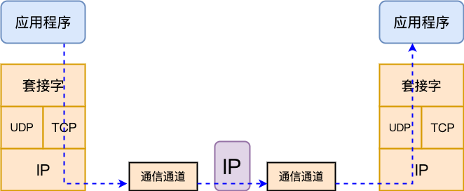</p><p data-lake-id="ube74d7b8" id="ube74d7b8"><span data-lake-id="ub23df6b2" id="ub23df6b2" style="color: rgba(0, 0, 0, 0.87)">它能实现不同主机间的进程间通信，我们网络上各种各样的服务大多都是基于 Socket 来完成通信的</span></p><p data-lake-id="u103a08b9" id="u103a08b9"><span data-lake-id="ua27c6452" id="ua27c6452" style="color: rgba(0, 0, 0, 0.87)">例如我们每天浏览网页、QQ 聊天、收发 email 等等</span></p><p data-lake-id="u6911c7e2" id="u6911c7e2"><span data-lake-id="ud94b6eed" id="ud94b6eed">​</span><br/></p><h4 data-lake-id="xqVgL" id="xqVgL"><span data-lake-id="uf8f8db66" id="uf8f8db66">TCP协议</span></h4><p data-lake-id="u737fc3f5" id="u737fc3f5"><strong><span data-lake-id="u6b54f790" id="u6b54f790" style="color: rgba(0, 0, 0, 0.87)">TCP协议，传输控制协议（英语：Transmission Control Protocol，缩写为 TCP）</span></strong><span data-lake-id="u499b1ed1" id="u499b1ed1" style="color: rgba(0, 0, 0, 0.87)"> 是一种面向连接的、可靠的、基于字节流的传输层通信协议，由IETF的RFC 793定义。</span></p><p data-lake-id="uc1e87638" id="uc1e87638"><span data-lake-id="u1dc6a3ff" id="u1dc6a3ff" style="color: rgba(0, 0, 0, 0.87)">TCP通信需要经过</span><strong><span data-lake-id="u4c21f5ef" id="u4c21f5ef" style="color: rgba(0, 0, 0, 0.87)">创建连接、数据传送、终止连接</span></strong><span data-lake-id="u59196370" id="u59196370" style="color: rgba(0, 0, 0, 0.87)">三个步骤。</span></p><p data-lake-id="u4ac74804" id="u4ac74804">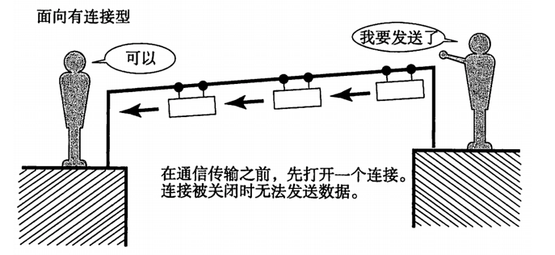</p><p data-lake-id="u72f7e3ac" id="u72f7e3ac"><span data-lake-id="ufce474f2" id="ufce474f2" style="color: rgba(0, 0, 0, 0.87)">TCP通信模型中，在通信开始之前，一定要先建立相关的链接，才能发送数据，类似于生活中，"打电话""</span></p><p data-lake-id="ua8f0def3" id="ua8f0def3"></p><p data-lake-id="u0d30aa2a" id="u0d30aa2a">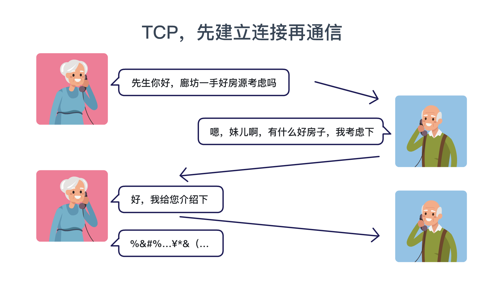</p><p data-lake-id="u3a4fbc62" id="u3a4fbc62"><span data-lake-id="u6e060e76" id="u6e060e76">TCP的特点：</span></p><ol list="u47f40a91"><li data-lake-id="ua76fbcd0" fid="u87f031b0" id="ua76fbcd0"><span data-lake-id="uccc63ac2" id="uccc63ac2">面向连接。</span></li></ol><ol data-lake-indent="1" list="u47f40a91"><li data-lake-id="u55a369b4" fid="u87f031b0" id="u55a369b4"><span data-lake-id="u0de04a31" id="u0de04a31" style="color: rgba(0, 0, 0, 0.87)">通信双方必须先建立连接才能进行数据的传输，双方都必须为该连接分配必要的系统内核资源，以管理连接的状态和连接上的传输。</span></li><li data-lake-id="u701c81b7" fid="u87f031b0" id="u701c81b7"><span data-lake-id="u834b075b" id="u834b075b" style="color: rgba(0, 0, 0, 0.87)">双方间的数据传输都可以通过这一个连接进行。</span></li><li data-lake-id="u030e5d87" fid="u87f031b0" id="u030e5d87"><span data-lake-id="ub2f4b05a" id="ub2f4b05a" style="color: rgba(0, 0, 0, 0.87)">完成数据交换后，双方必须断开此连接，以释放系统资源。</span></li></ol><ol list="u47f40a91" start="2"><li data-lake-id="uec8f5ccd" fid="u87f031b0" id="uec8f5ccd"><span data-lake-id="u827d70d4" id="u827d70d4">传输可靠</span></li></ol><ol data-lake-indent="1" list="u47f40a91"><li data-lake-id="uc71b6cfe" fid="u87f031b0" id="uc71b6cfe"><span data-lake-id="u52a20ca3" id="u52a20ca3">TCP采用发送应答机制。</span></li><li data-lake-id="ua01a8b62" fid="u87f031b0" id="ua01a8b62"><span data-lake-id="u206396af" id="u206396af">超时重传。发送端发出一个报文段之后就启动定时器，如果在定时时间内没有收到应答就重新发送这个报文段。TCP为了保证不发生丢包，就给每个包一个序号，同时序号也保证了传送到接收端实体的包的按序接收。然后接收端实体对已成功收到的包发回一个相应的确认（ACK）；如果发送端实体在合理的往返时延（RTT）内未收到确认，那么对应的数据包就被假设为已丢失将会被进行重传。</span></li><li data-lake-id="u35d7c159" fid="u87f031b0" id="u35d7c159"><span data-lake-id="ud17ec48e" id="ud17ec48e">错误校验。TCP用一个校验和函数来检验数据是否有错误；在发送和接收时都要计算校验和。</span></li><li data-lake-id="uad9291d9" fid="u87f031b0" id="uad9291d9"><span data-lake-id="u904d4487" id="u904d4487">流量控制和阻塞管理。流量控制用来避免主机发送得过快而使接收方来不及完全收下。</span></li></ol><p data-lake-id="u99c1ab1f" id="u99c1ab1f"><br/></p><h4 data-lake-id="tuRaS" id="tuRaS"><span data-lake-id="u1cbdb9c5" id="u1cbdb9c5">UDP协议</span></h4><p data-lake-id="ub7b74209" id="ub7b74209"><span data-lake-id="u1da0861b" id="u1da0861b" style="color: rgba(0, 0, 0, 0.87)">UDP是无连接通信协议，即在数据传输时，数据的发送端和接收端</span><strong><span data-lake-id="u490a21bd" id="u490a21bd" style="color: rgba(0, 0, 0, 0.87)">不建立逻辑连接</span></strong><span data-lake-id="uc381bcf4" id="uc381bcf4" style="color: rgba(0, 0, 0, 0.87)">。简单来说，当一台计算机向另外一台计算机发送数据时，发送端不会确认接收端是否存在，就会发出数据，同样接收端在收到数据时，也不会向发送端反馈是否收到数据。</span></p><p data-lake-id="u33236868" id="u33236868"><span data-lake-id="u956e2c93" id="u956e2c93" style="color: rgba(0, 0, 0, 0.87)">由于使用UDP协议消耗资源小，通信效率高，所以通常都会用于音频、视频和普通数据的传输例如视频会议都使用UDP协议，因为这种情况即使偶尔丢失一两个数据包，也不会对接收结果产生太大影响。但是在使用UDP协议传送数据时，由于UDP的面向无连接性，不能保证数据的完整性，因此在传输重要数据时不建议使用UDP协议。</span></p><p data-lake-id="u5e844e44" id="u5e844e44"><span data-lake-id="ub2ed9d44" id="ub2ed9d44" style="color: rgba(0, 0, 0, 0.87)">UDP传输的每个数据包被限制在64K以内（数据包大小由一个16位的无符号整数记录）。</span></p><p data-lake-id="ua7cf6c3b" id="ua7cf6c3b"></p><p data-lake-id="ue175a701" id="ue175a701"><span data-lake-id="uf43ef01b" id="uf43ef01b" style="color: rgba(0, 0, 0, 0.87)">UDP (User Datagram Protocol )不提供复杂的控制机制, 如果传输过程中出现丢包, UDP 也不负责重发. 甚至当出现包到达顺序乱掉时候也没有纠正的功能. 由于 UDP 面向无连接, 它可以随时发送数据. 再加上 UDP 本身的处理既简单又高效, 因此常用于以下几个方面:</span></p><ul list="uda13a454"><li data-lake-id="ue193b015" fid="u48c724cf" id="ue193b015"><span data-lake-id="ue49aa852" id="ue49aa852" style="color: rgba(0, 0, 0, 0.87)">包总量较少的通信(DNS).</span></li><li data-lake-id="udfa36bc8" fid="u48c724cf" id="udfa36bc8"><span data-lake-id="u44faef6e" id="u44faef6e" style="color: rgba(0, 0, 0, 0.87)">视频、音频等多媒体通信(即时通信).</span></li><li data-lake-id="u4959cdfa" fid="u48c724cf" id="u4959cdfa"><span data-lake-id="u6aab113c" id="u6aab113c" style="color: rgba(0, 0, 0, 0.87)">限定于 LAN 等特定网络中的应用通信.</span></li><li data-lake-id="u97264358" fid="u48c724cf" id="u97264358"><span data-lake-id="u8d60c3b5" id="u8d60c3b5" style="color: rgba(0, 0, 0, 0.87)">广播通信(广播、多播)</span></li></ul><p data-lake-id="ub332ef32" id="ub332ef32"><span data-lake-id="u0cf864c8" id="u0cf864c8" style="color: rgba(0, 0, 0, 0.87)">UDP的特点：</span></p><ul list="u1006d1ad"><li data-lake-id="ud4c2edfb" fid="u2151bebf" id="ud4c2edfb"><span data-lake-id="ufeb0af5f" id="ufeb0af5f" style="color: rgba(0, 0, 0, 0.87)">需要资源少</span></li><li data-lake-id="ua77305b0" fid="u2151bebf" id="ua77305b0"><span data-lake-id="u1bbb0964" id="u1bbb0964" style="color: rgba(0, 0, 0, 0.87)">不保证接收</span></li><li data-lake-id="u664389f4" fid="u2151bebf" id="u664389f4"><span data-lake-id="u0a24a8f6" id="u0a24a8f6" style="color: rgba(0, 0, 0, 0.87)">无连接</span></li><li data-lake-id="u8468bf0f" fid="u2151bebf" id="u8468bf0f"><span data-lake-id="ue5064169" id="ue5064169" style="color: rgba(0, 0, 0, 0.87)">快</span></li></ul><h4 data-lake-id="SOFf0" id="SOFf0"><span data-lake-id="u9e37431a" id="u9e37431a" style="color: rgba(0, 0, 0, 0.87)">UDP和TCP的区别</span></h4><table class="lake-table" data-lake-id="iPWf8" id="iPWf8" margin="true" style="width: 750px"><colgroup><col width="375"/><col width="375"/></colgroup><tbody><tr data-lake-id="u2c4a78a7" id="u2c4a78a7"><td data-lake-id="u872bf218" id="u872bf218"><p data-lake-id="ua6855dda" id="ua6855dda" style="text-align: center"><strong><span data-lake-id="u1d3865ae" id="u1d3865ae" style="color: rgba(0, 0, 0, 0.87)">UDP</span></strong></p></td><td data-lake-id="u468d774e" id="u468d774e"><p data-lake-id="u3f2fcfbc" id="u3f2fcfbc" style="text-align: center"><strong><span data-lake-id="u1ff2b030" id="u1ff2b030" style="color: rgba(0, 0, 0, 0.87)">TCP</span></strong></p></td></tr><tr data-lake-id="u23352755" id="u23352755"><td data-lake-id="u87d84908" id="u87d84908"><p data-lake-id="ufba0ddca" id="ufba0ddca" style="text-align: left"><span data-lake-id="uf819274d" id="uf819274d" style="color: rgba(0, 0, 0, 0.87)">面向</span><strong><span data-lake-id="u0e0d1d50" id="u0e0d1d50" style="color: rgba(0, 0, 0, 0.87)">无连接</span></strong></p></td><td data-lake-id="ufd45b724" id="ufd45b724"><p data-lake-id="u46e32c84" id="u46e32c84" style="text-align: left"><span data-lake-id="u6a0823fb" id="u6a0823fb" style="color: rgba(0, 0, 0, 0.87)">面向</span><strong><span data-lake-id="u0c6c697c" id="u0c6c697c" style="color: rgba(0, 0, 0, 0.87)">有连接</span></strong></p></td></tr><tr data-lake-id="u16879997" id="u16879997"><td data-lake-id="ua948ea76" id="ua948ea76"><p data-lake-id="u61a5af13" id="u61a5af13" style="text-align: left"><span data-lake-id="u56a26df7" id="u56a26df7" style="color: rgba(0, 0, 0, 0.87)">支持一对一、一对多、多对一、和多对多的通信</span></p></td><td data-lake-id="u1560ea64" id="u1560ea64"><p data-lake-id="ubd48d790" id="ubd48d790" style="text-align: left"><span data-lake-id="u6b62f805" id="u6b62f805" style="color: rgba(0, 0, 0, 0.87)">只能有两个端点，实现一对一的通信</span></p></td></tr><tr data-lake-id="u88a9101c" id="u88a9101c"><td data-lake-id="u9e5d05dc" id="u9e5d05dc"><p data-lake-id="ua317e963" id="ua317e963" style="text-align: left"><strong><span data-lake-id="u87484451" id="u87484451" style="color: rgba(0, 0, 0, 0.87)">不保证</span></strong><span data-lake-id="u37f11b29" id="u37f11b29" style="color: rgba(0, 0, 0, 0.87)">数据传输的可靠性</span></p></td><td data-lake-id="u1a98e312" id="u1a98e312"><p data-lake-id="u127f2c25" id="u127f2c25" style="text-align: left"><span data-lake-id="u42c2f2d4" id="u42c2f2d4" style="color: rgba(0, 0, 0, 0.87)">传输数据无差错，不丢失，不重复，且按时序到达</span></p></td></tr><tr data-lake-id="u160075b2" id="u160075b2"><td data-lake-id="u4ea55c96" id="u4ea55c96"><p data-lake-id="u497aa0cf" id="u497aa0cf" style="text-align: left"><span data-lake-id="udcd38d85" id="udcd38d85" style="color: rgba(0, 0, 0, 0.87)">占用资源较</span><strong><span data-lake-id="uc6e83b54" id="uc6e83b54" style="color: rgba(0, 0, 0, 0.87)">少</span></strong></p></td><td data-lake-id="ue98551eb" id="ue98551eb"><p data-lake-id="u751747fe" id="u751747fe" style="text-align: left"><span data-lake-id="u95375793" id="u95375793" style="color: rgba(0, 0, 0, 0.87)">占用资源较</span><strong><span data-lake-id="ubdba35db" id="ubdba35db" style="color: rgba(0, 0, 0, 0.87)">多</span></strong></p></td></tr></tbody></table><h3 data-lake-id="xtyZa" id="xtyZa"><span data-lake-id="ua7276985" id="ua7276985">TCP编程</span></h3><h4 data-lake-id="qfpex" id="qfpex"><span data-lake-id="ud7135ff5" id="ud7135ff5">开发流程图</span></h4><p data-lake-id="ud2074dfd" id="ud2074dfd"></p><h4 data-lake-id="Vi1x3" id="Vi1x3"><span data-lake-id="u408156a5" id="u408156a5">客户端开发</span></h4><h5 data-lake-id="RGyZC" id="RGyZC"><span data-lake-id="ue7d97706" id="ue7d97706">需求说明</span></h5><ol list="u53054c30"><li data-lake-id="uba4c1dd4" fid="ud4861165" id="uba4c1dd4"><span data-lake-id="u2c336b5a" id="u2c336b5a">确保设备能够连接网络</span></li><li data-lake-id="ufe956bf3" fid="ud4861165" id="ufe956bf3"><span data-lake-id="u329de995" id="u329de995">当前开发的是客户端，需要有一个服务端配合，实现两者通讯</span></li><li data-lake-id="ua39e6ff9" fid="ud4861165" id="ua39e6ff9"><span data-lake-id="u523588f5" id="u523588f5">确保服务端和客户端在同一个网络环境中（在同一个局域网）</span></li><li data-lake-id="uea0a0463" fid="ud4861165" id="uea0a0463"><span data-lake-id="u9ee34fb9" id="u9ee34fb9">客户端循环给服务端发送消息</span></li></ol><h5 data-lake-id="BQDHZ" id="BQDHZ"><span data-lake-id="ud927a835" id="ud927a835">开发流程</span></h5><p data-lake-id="u50cea6f7" id="u50cea6f7"><span data-lake-id="udb86a021" id="udb86a021">来到应用开发的</span><strong><span data-lake-id="u5f5bb35f" id="u5f5bb35f">根目录。</span></strong></p><p data-lake-id="u369321a4" id="u369321a4"><span data-lake-id="u2fcc4a8f" id="u2fcc4a8f">我们编写代码的</span><strong><span data-lake-id="u69621125" id="u69621125">根目录</span></strong><span data-lake-id="u578c9e71" id="u578c9e71">为</span><code data-lake-id="uc04e0e93" id="uc04e0e93"><span data-lake-id="u4fa7694c" id="u4fa7694c">device/board/itcast/genkipi/app</span></code><span data-lake-id="u557efe63" id="u557efe63">。</span></p><ol list="u863ceafd"><li data-lake-id="ub3d84f44" fid="u3177aa8f" id="ub3d84f44"><strong><span data-lake-id="u1fcc05e0" id="u1fcc05e0">根目录</span></strong><span data-lake-id="uf2dbe35c" id="uf2dbe35c">下新建</span><code data-lake-id="u1dfee588" id="u1dfee588"><span data-lake-id="u0cc616e6" id="u0cc616e6" style="color: rgb(54, 70, 78); background-color: rgb(245, 245, 245)">tcp_client</span></code><span data-lake-id="u8cc8ee95" id="u8cc8ee95" style="color: rgb(54, 70, 78); background-color: rgb(245, 245, 245)">文件夹，此为</span><strong><span data-lake-id="u52c3ef5f" id="u52c3ef5f" style="color: rgb(54, 70, 78); background-color: rgb(245, 245, 245)">项目目录</span></strong><span data-lake-id="u5a787b9d" id="u5a787b9d" style="color: rgb(54, 70, 78); background-color: rgb(245, 245, 245)">。</span></li><li data-lake-id="u36e1eeca" fid="u3177aa8f" id="u36e1eeca"><span data-lake-id="u572147bc" id="u572147bc" style="color: rgb(54, 70, 78); background-color: rgb(245, 245, 245)">此</span><strong><span data-lake-id="uac405abd" id="uac405abd" style="color: rgb(54, 70, 78); background-color: rgb(245, 245, 245)">项目目录</span></strong><span data-lake-id="u2ae7e7f2" id="u2ae7e7f2" style="color: rgb(54, 70, 78); background-color: rgb(245, 245, 245)">下新建</span><code data-lake-id="u056996bb" id="u056996bb"><span data-lake-id="u046af225" id="u046af225" style="color: rgb(54, 70, 78); background-color: rgb(245, 245, 245)">main.c</span></code><span data-lake-id="u99a1c783" id="u99a1c783" style="color: rgb(54, 70, 78); background-color: rgb(245, 245, 245)">文件</span></li><li data-lake-id="u1b3f37ec" fid="u3177aa8f" id="u1b3f37ec"><span data-lake-id="u623ed7ef" id="u623ed7ef" style="color: rgb(54, 70, 78); background-color: rgb(245, 245, 245)">此</span><strong><span data-lake-id="ua763e567" id="ua763e567" style="color: rgb(54, 70, 78); background-color: rgb(245, 245, 245)">项目目录</span></strong><span data-lake-id="ue7d05019" id="ue7d05019" style="color: rgb(54, 70, 78); background-color: rgb(245, 245, 245)">下新建</span><code data-lake-id="u16f26963" id="u16f26963"><span data-lake-id="u6ab771c1" id="u6ab771c1" style="color: rgb(54, 70, 78); background-color: rgb(245, 245, 245)">BUILD.gn</span></code><span data-lake-id="ud73b704a" id="ud73b704a" style="color: rgb(54, 70, 78); background-color: rgb(245, 245, 245)">文件</span></li><li data-lake-id="u4ef0faff" fid="u3177aa8f" id="u4ef0faff"><span data-lake-id="u27e873ed" id="u27e873ed" style="color: rgba(0, 0, 0, 0.87)">修改</span><strong><span data-lake-id="ucef697da" id="ucef697da" style="color: rgba(0, 0, 0, 0.87)">根目录</span></strong><span data-lake-id="u4229f8f3" id="u4229f8f3" style="color: rgba(0, 0, 0, 0.87)">下的</span><code data-lake-id="uc159067c" id="uc159067c"><span data-lake-id="uf97bc664" id="uf97bc664" style="color: rgba(0, 0, 0, 0.87)">BUILD.gn</span></code><span data-lake-id="u7e36aa92" id="u7e36aa92" style="color: rgba(0, 0, 0, 0.87)">文件</span></li></ol><h5 data-lake-id="RrZUq" id="RrZUq"><span data-lake-id="uf1d04561" id="uf1d04561">代码部分</span></h5><span class="yuque-card-unsupported">[codeblock]</span><span class="yuque-card-unsupported">[codeblock]</span><span class="yuque-card-unsupported">[codeblock]</span><h5 data-lake-id="Nl1W0" id="Nl1W0"><span data-lake-id="u5d44db2b" id="u5d44db2b">校验方式</span></h5><p data-lake-id="u5440998a" id="u5440998a"><span data-lake-id="uabe12cfa" id="uabe12cfa">打开网络调试助手，当前编写的代码为tcp 客户端，那么我们需要将调试助手配置为tcp 服务端。配置如图:</span></p><p data-lake-id="u26f440f2" id="u26f440f2">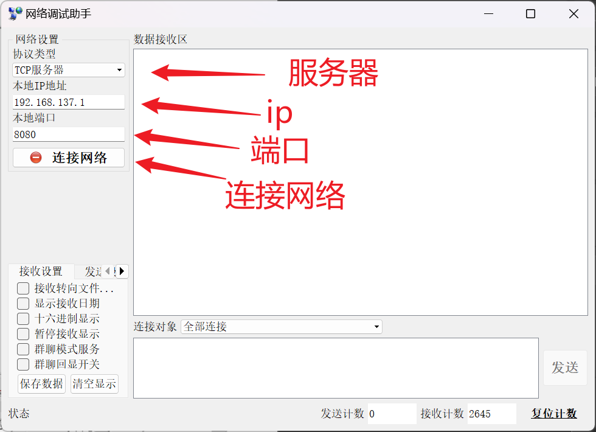</p><p data-lake-id="u48e43505" id="u48e43505"><span data-lake-id="u082ab516" id="u082ab516">观察输出结果：</span></p><p data-lake-id="u342161e7" id="u342161e7">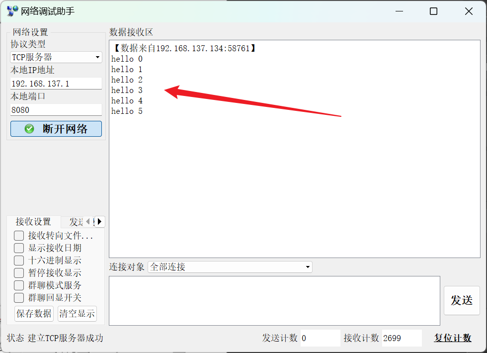</p><h4 data-lake-id="lSiOz" id="lSiOz"><span data-lake-id="ud2e48341" id="ud2e48341">服务端开发</span></h4><h5 data-lake-id="uJAEd" id="uJAEd"><span data-lake-id="ue00109f3" id="ue00109f3">需求说明</span></h5><ol list="uedefd255"><li data-lake-id="u6acba32e" fid="ud4861165" id="u6acba32e"><span data-lake-id="u7871b0f1" id="u7871b0f1">确保设备能够连接网络</span></li><li data-lake-id="ub7f65695" fid="ud4861165" id="ub7f65695"><span data-lake-id="ubfb922da" id="ubfb922da">当前开发的是</span><strong><span data-lake-id="ubbfb45a5" id="ubbfb45a5">服务端</span></strong><span data-lake-id="ud84c2dac" id="ud84c2dac">，需要有一个</span><strong><span data-lake-id="ud9dd8346" id="ud9dd8346">客户端</span></strong><span data-lake-id="ud6fac848" id="ud6fac848">配合，实现两者通讯</span></li><li data-lake-id="u4fbc2041" fid="ud4861165" id="u4fbc2041"><span data-lake-id="uc1418e07" id="uc1418e07">确保服务端和客户端在同一个网络环境中（在同一个局域网）</span></li><li data-lake-id="u73f41583" fid="ud4861165" id="u73f41583"><span data-lake-id="uee037559" id="uee037559">服务端等待客户端发送消息</span></li></ol><h5 data-lake-id="F5vu4" id="F5vu4"><span data-lake-id="u27a1763e" id="u27a1763e">开发流程</span></h5><p data-lake-id="u615a44ad" id="u615a44ad"><span data-lake-id="udf33a667" id="udf33a667">来到应用开发的</span><strong><span data-lake-id="udaeee462" id="udaeee462">根目录。</span></strong></p><p data-lake-id="ud88a5a95" id="ud88a5a95"><span data-lake-id="ud4ba8fcc" id="ud4ba8fcc">我们编写代码的</span><strong><span data-lake-id="uab5d41b4" id="uab5d41b4">根目录</span></strong><span data-lake-id="ud38215d7" id="ud38215d7">为</span><code data-lake-id="ud88b9595" id="ud88b9595"><span data-lake-id="ue272e231" id="ue272e231">device/board/itcast/genkipi/app</span></code><span data-lake-id="u306c7132" id="u306c7132">。</span></p><ol list="uc96f3078"><li data-lake-id="u68e69b98" fid="u3177aa8f" id="u68e69b98"><strong><span data-lake-id="u38f05fce" id="u38f05fce">根目录</span></strong><span data-lake-id="u5112148c" id="u5112148c">下新建</span><code data-lake-id="uc6f10a4a" id="uc6f10a4a"><span data-lake-id="udf3c7f68" id="udf3c7f68" style="color: rgb(54, 70, 78); background-color: rgb(245, 245, 245)">tcp_server</span></code><span data-lake-id="uc6a07315" id="uc6a07315" style="color: rgb(54, 70, 78); background-color: rgb(245, 245, 245)">文件夹，此为</span><strong><span data-lake-id="ubfd9706d" id="ubfd9706d" style="color: rgb(54, 70, 78); background-color: rgb(245, 245, 245)">项目目录</span></strong><span data-lake-id="u53f5dd75" id="u53f5dd75" style="color: rgb(54, 70, 78); background-color: rgb(245, 245, 245)">。</span></li><li data-lake-id="uf869fd2d" fid="u3177aa8f" id="uf869fd2d"><span data-lake-id="ua6abda81" id="ua6abda81" style="color: rgb(54, 70, 78); background-color: rgb(245, 245, 245)">此</span><strong><span data-lake-id="u3c3a9368" id="u3c3a9368" style="color: rgb(54, 70, 78); background-color: rgb(245, 245, 245)">项目目录</span></strong><span data-lake-id="u07521c61" id="u07521c61" style="color: rgb(54, 70, 78); background-color: rgb(245, 245, 245)">下新建</span><code data-lake-id="ud2c9de75" id="ud2c9de75"><span data-lake-id="uff7f7010" id="uff7f7010" style="color: rgb(54, 70, 78); background-color: rgb(245, 245, 245)">main.c</span></code><span data-lake-id="uaaf526ab" id="uaaf526ab" style="color: rgb(54, 70, 78); background-color: rgb(245, 245, 245)">文件</span></li><li data-lake-id="u5953ba64" fid="u3177aa8f" id="u5953ba64"><span data-lake-id="udad0c0e4" id="udad0c0e4" style="color: rgb(54, 70, 78); background-color: rgb(245, 245, 245)">此</span><strong><span data-lake-id="u137d0ae4" id="u137d0ae4" style="color: rgb(54, 70, 78); background-color: rgb(245, 245, 245)">项目目录</span></strong><span data-lake-id="u59b790e1" id="u59b790e1" style="color: rgb(54, 70, 78); background-color: rgb(245, 245, 245)">下新建</span><code data-lake-id="ufad8f7ef" id="ufad8f7ef"><span data-lake-id="ua4f2c978" id="ua4f2c978" style="color: rgb(54, 70, 78); background-color: rgb(245, 245, 245)">BUILD.gn</span></code><span data-lake-id="u7db2e0d6" id="u7db2e0d6" style="color: rgb(54, 70, 78); background-color: rgb(245, 245, 245)">文件</span></li><li data-lake-id="u7aaebc68" fid="u3177aa8f" id="u7aaebc68"><span data-lake-id="u327afc36" id="u327afc36" style="color: rgba(0, 0, 0, 0.87)">修改</span><strong><span data-lake-id="uff5f9b25" id="uff5f9b25" style="color: rgba(0, 0, 0, 0.87)">根目录</span></strong><span data-lake-id="u6b49e2f2" id="u6b49e2f2" style="color: rgba(0, 0, 0, 0.87)">下的</span><code data-lake-id="u6c0bfb9c" id="u6c0bfb9c"><span data-lake-id="u1b64b34a" id="u1b64b34a" style="color: rgba(0, 0, 0, 0.87)">BUILD.gn</span></code><span data-lake-id="u41dfec1a" id="u41dfec1a" style="color: rgba(0, 0, 0, 0.87)">文件</span></li></ol><h5 data-lake-id="lC2wi" id="lC2wi"><span data-lake-id="u4f6f3e63" id="u4f6f3e63">代码部分</span></h5><span class="yuque-card-unsupported">[codeblock]</span><span class="yuque-card-unsupported">[codeblock]</span><span class="yuque-card-unsupported">[codeblock]</span><h5 data-lake-id="Ya1nA" id="Ya1nA"><span data-lake-id="u71f07809" id="u71f07809">校验方式</span></h5><p data-lake-id="ue46a167d" id="ue46a167d"><span data-lake-id="ub2dea518" id="ub2dea518">打开网络调试助手，当前编写的代码为tcp 服务端，那么我们需要将调试助手配置为tcp 客户端。配置如图:</span></p><p data-lake-id="u8157df64" id="u8157df64">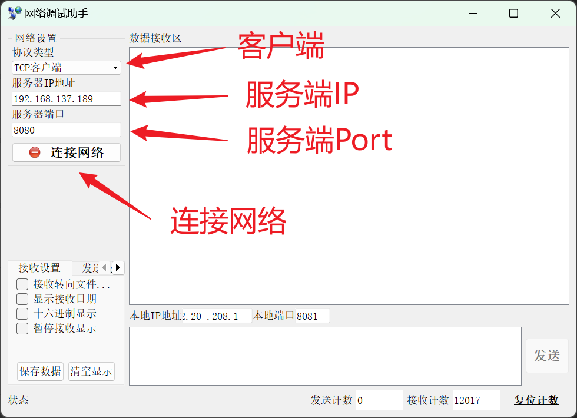</p><p data-lake-id="u69522961" id="u69522961"><span data-lake-id="u0db2a596" id="u0db2a596">服务器IP的获取方式需要通过路由器获得，我使用的是PC机作为热点，可以通过热点中进行设备ip的查询：</span></p><p data-lake-id="u87f969b8" id="u87f969b8">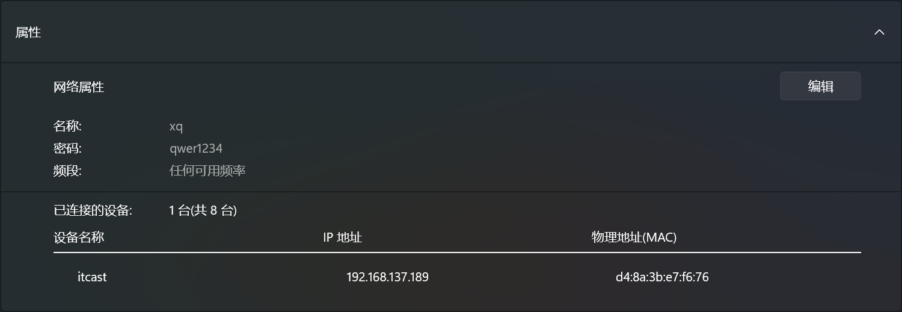</p><p data-lake-id="uec4bde58" id="uec4bde58"><span data-lake-id="u3eb7b535" id="u3eb7b535">点击连接网络，查看串口打印：</span></p><p data-lake-id="ua02da598" id="ua02da598">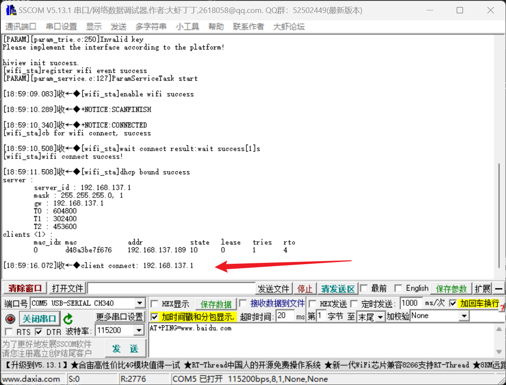</p><p data-lake-id="u652036e0" id="u652036e0"><span data-lake-id="u8393f413" id="u8393f413">客户端已经连接到自己编写的服务器上了。</span></p><p data-lake-id="u6f861b03" id="u6f861b03"><span data-lake-id="ue489447e" id="ue489447e">在网络调试工具中输入要发送的内容，点击发送，查看服务端的打印结果：</span></p><p data-lake-id="u15ec992e" id="u15ec992e">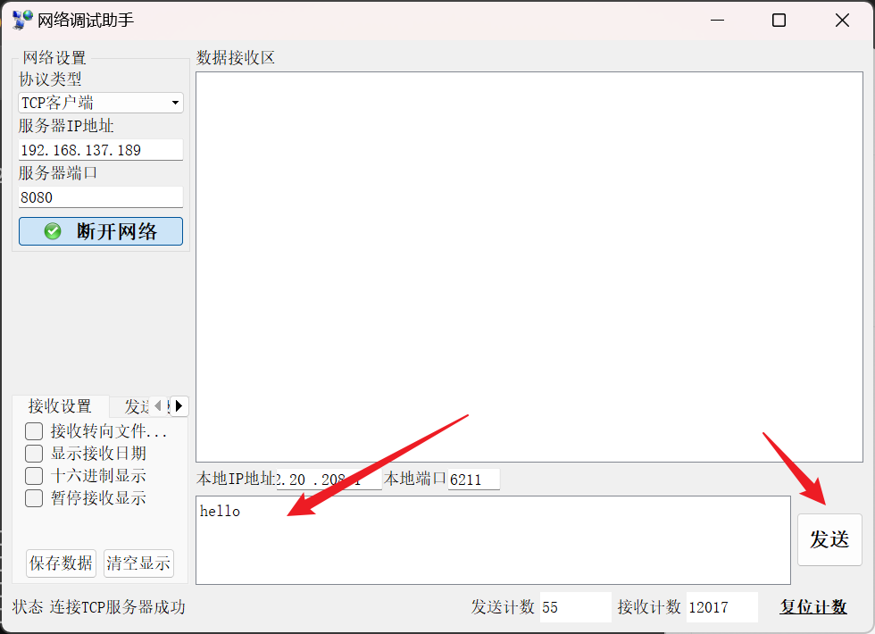</p><p data-lake-id="ucc375737" id="ucc375737">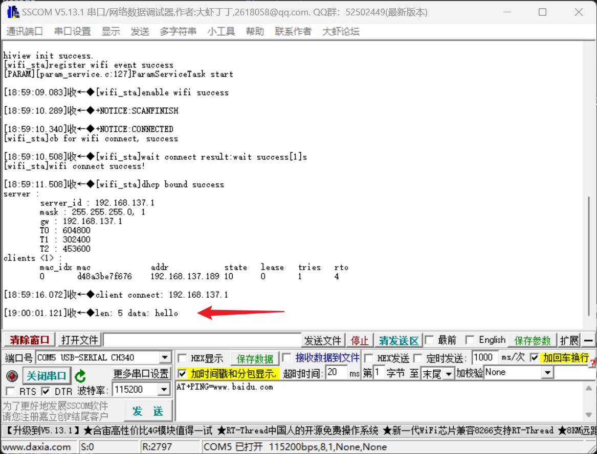</p><h3 data-lake-id="G8sUT" id="G8sUT"><span data-lake-id="u21eab44a" id="u21eab44a">UDP编程</span></h3><p data-lake-id="u8ea2de5d" id="u8ea2de5d"></p><h4 data-lake-id="ECO0i" id="ECO0i"><span data-lake-id="ue77981af" id="ue77981af">客户端开发</span></h4><h5 data-lake-id="qyfpe" id="qyfpe"><span data-lake-id="u446d2db7" id="u446d2db7">需求说明</span></h5><ol list="uf7e74fde"><li data-lake-id="u1249131b" fid="ud4861165" id="u1249131b"><span data-lake-id="u1a6ff4e4" id="u1a6ff4e4">确保设备能够连接网络</span></li><li data-lake-id="u7044661b" fid="ud4861165" id="u7044661b"><span data-lake-id="u1d7f1a47" id="u1d7f1a47">当前开发的是客户端，需要有一个服务端配合，实现两者通讯</span></li><li data-lake-id="u4040c97c" fid="ud4861165" id="u4040c97c"><span data-lake-id="uf8201482" id="uf8201482">确保服务端和客户端在同一个网络环境中（在同一个局域网）</span></li><li data-lake-id="uacc7f86f" fid="ud4861165" id="uacc7f86f"><span data-lake-id="u2c062a1a" id="u2c062a1a">客户端循环给服务端发送消息</span></li></ol><h5 data-lake-id="X8rLN" id="X8rLN"><span data-lake-id="uc9d4cc5a" id="uc9d4cc5a">开发流程</span></h5><p data-lake-id="u042f2b28" id="u042f2b28"><span data-lake-id="u7f112849" id="u7f112849">来到应用开发的</span><strong><span data-lake-id="uabe62402" id="uabe62402">根目录。</span></strong></p><p data-lake-id="u7a4cdb15" id="u7a4cdb15"><span data-lake-id="u68da7c27" id="u68da7c27">我们编写代码的</span><strong><span data-lake-id="udf62d602" id="udf62d602">根目录</span></strong><span data-lake-id="udeb57e3d" id="udeb57e3d">为</span><code data-lake-id="u585f1153" id="u585f1153"><span data-lake-id="u9a9d006c" id="u9a9d006c">device/board/itcast/genkipi/app</span></code><span data-lake-id="ud9bdbf40" id="ud9bdbf40">。</span></p><ol list="uda2b5834"><li data-lake-id="u61668d11" fid="u3177aa8f" id="u61668d11"><strong><span data-lake-id="ua309fdc4" id="ua309fdc4">根目录</span></strong><span data-lake-id="u96f6b803" id="u96f6b803">下新建</span><code data-lake-id="ud4ceb3a1" id="ud4ceb3a1"><span data-lake-id="u9cbca11f" id="u9cbca11f" style="color: rgb(54, 70, 78); background-color: rgb(245, 245, 245)">udp_client</span></code><span data-lake-id="u1d9fd72d" id="u1d9fd72d" style="color: rgb(54, 70, 78); background-color: rgb(245, 245, 245)">文件夹，此为</span><strong><span data-lake-id="u183f4475" id="u183f4475" style="color: rgb(54, 70, 78); background-color: rgb(245, 245, 245)">项目目录</span></strong><span data-lake-id="u6478fad4" id="u6478fad4" style="color: rgb(54, 70, 78); background-color: rgb(245, 245, 245)">。</span></li><li data-lake-id="u4a21e160" fid="u3177aa8f" id="u4a21e160"><span data-lake-id="u72be8851" id="u72be8851" style="color: rgb(54, 70, 78); background-color: rgb(245, 245, 245)">此</span><strong><span data-lake-id="u79f28b0c" id="u79f28b0c" style="color: rgb(54, 70, 78); background-color: rgb(245, 245, 245)">项目目录</span></strong><span data-lake-id="u5a425612" id="u5a425612" style="color: rgb(54, 70, 78); background-color: rgb(245, 245, 245)">下新建</span><code data-lake-id="uf2c628a0" id="uf2c628a0"><span data-lake-id="ub2c35e5a" id="ub2c35e5a" style="color: rgb(54, 70, 78); background-color: rgb(245, 245, 245)">main.c</span></code><span data-lake-id="uaeddb800" id="uaeddb800" style="color: rgb(54, 70, 78); background-color: rgb(245, 245, 245)">文件</span></li><li data-lake-id="u80236e96" fid="u3177aa8f" id="u80236e96"><span data-lake-id="u6ee7366f" id="u6ee7366f" style="color: rgb(54, 70, 78); background-color: rgb(245, 245, 245)">此</span><strong><span data-lake-id="uec25dfce" id="uec25dfce" style="color: rgb(54, 70, 78); background-color: rgb(245, 245, 245)">项目目录</span></strong><span data-lake-id="ud44058b4" id="ud44058b4" style="color: rgb(54, 70, 78); background-color: rgb(245, 245, 245)">下新建</span><code data-lake-id="u5bdfe392" id="u5bdfe392"><span data-lake-id="u3226c211" id="u3226c211" style="color: rgb(54, 70, 78); background-color: rgb(245, 245, 245)">BUILD.gn</span></code><span data-lake-id="u91aa8f83" id="u91aa8f83" style="color: rgb(54, 70, 78); background-color: rgb(245, 245, 245)">文件</span></li><li data-lake-id="u9b058a50" fid="u3177aa8f" id="u9b058a50"><span data-lake-id="uc08e864d" id="uc08e864d" style="color: rgba(0, 0, 0, 0.87)">修改</span><strong><span data-lake-id="u3967feee" id="u3967feee" style="color: rgba(0, 0, 0, 0.87)">根目录</span></strong><span data-lake-id="uc4c23810" id="uc4c23810" style="color: rgba(0, 0, 0, 0.87)">下的</span><code data-lake-id="u31fb2f16" id="u31fb2f16"><span data-lake-id="u9b409644" id="u9b409644" style="color: rgba(0, 0, 0, 0.87)">BUILD.gn</span></code><span data-lake-id="u18ef5548" id="u18ef5548" style="color: rgba(0, 0, 0, 0.87)">文件</span></li></ol><h5 data-lake-id="QMLVk" id="QMLVk"><span data-lake-id="ue1a6e28e" id="ue1a6e28e">代码部分</span></h5><span class="yuque-card-unsupported">[codeblock]</span><span class="yuque-card-unsupported">[codeblock]</span><span class="yuque-card-unsupported">[codeblock]</span><h5 data-lake-id="sSKis" id="sSKis"><span data-lake-id="u650b1d6c" id="u650b1d6c">校验方式</span></h5><p data-lake-id="u0d3c7656" id="u0d3c7656"><span data-lake-id="u1b8a9ce1" id="u1b8a9ce1">打开网络调试助手，当前编写的代码为udp客户端，那么我们需要将调试助手配置为UDP服务端。配置如图:</span></p><p data-lake-id="u7b2fdd30" id="u7b2fdd30">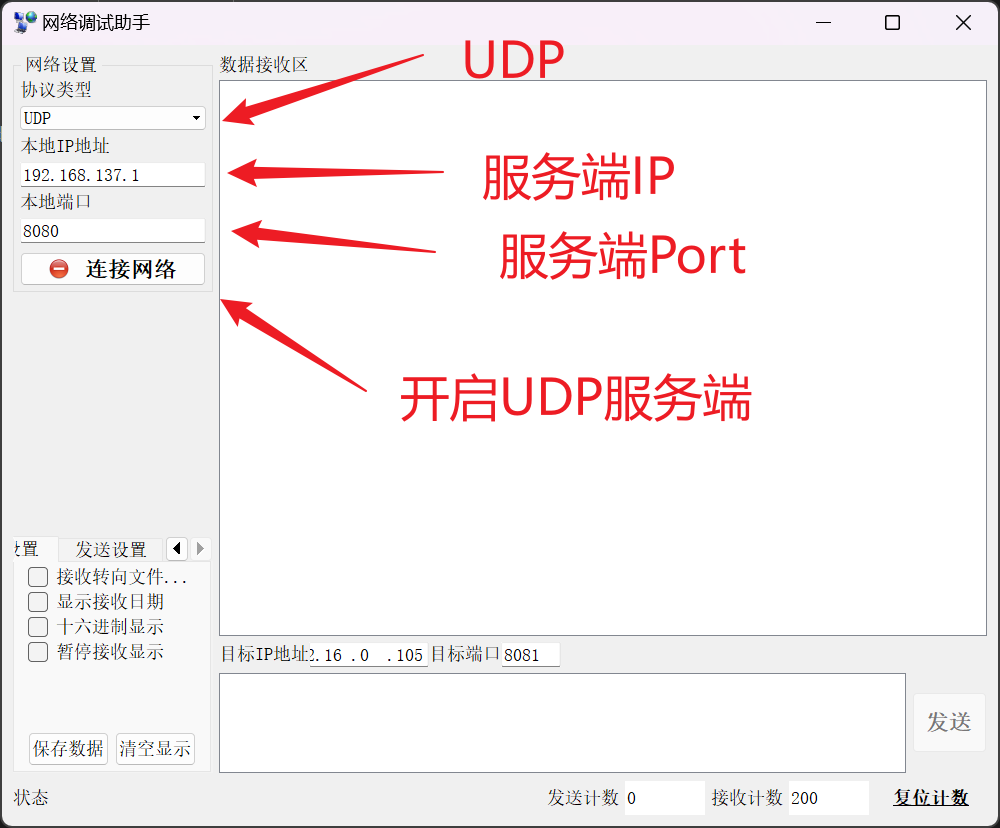</p><p data-lake-id="u9fc4af92" id="u9fc4af92"><span data-lake-id="u83c0cf2d" id="u83c0cf2d">服务器IP也是本机IP地址，我们可以通过命令行查询本机的IP：</span></p><span class="yuque-card-unsupported">[codeblock]</span><p data-lake-id="u584209be" id="u584209be"><span data-lake-id="ue83c2e2c" id="ue83c2e2c">结果如图：</span></p><p data-lake-id="u3cf792fb" id="u3cf792fb">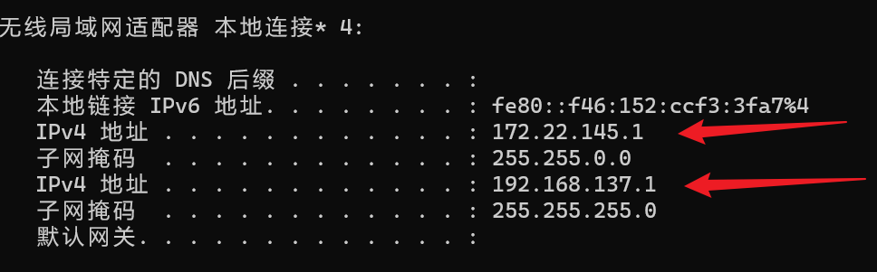</p><p data-lake-id="ucefc68a5" id="ucefc68a5"><span data-lake-id="ufab092b6" id="ufab092b6">我查看的是无线局域网适配器，因为我的PC作为热点和我们的开发板进行连接的。查询结果有两个，两个都可以使用。</span></p><p data-lake-id="u4e0f474f" id="u4e0f474f"><span data-lake-id="u73efdb76" id="u73efdb76">​</span><br/></p><p data-lake-id="ubb10863a" id="ubb10863a"><span data-lake-id="ud2deb138" id="ud2deb138">点击连接网络后，观察输出结果：</span></p><p data-lake-id="ubb40c814" id="ubb40c814">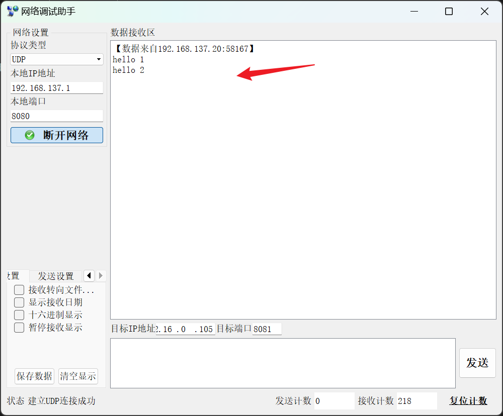</p><h4 data-lake-id="QS6ZE" id="QS6ZE"><span data-lake-id="u2e723e6f" id="u2e723e6f">服务端开发</span></h4><h5 data-lake-id="evwTV" id="evwTV"><span data-lake-id="u288d4d22" id="u288d4d22">需求说明</span></h5><ol list="ufd8d634b"><li data-lake-id="ud6b99394" fid="ud4861165" id="ud6b99394"><span data-lake-id="u6028a8e2" id="u6028a8e2">确保设备能够连接网络</span></li><li data-lake-id="u39755060" fid="ud4861165" id="u39755060"><span data-lake-id="uaa9f523a" id="uaa9f523a">当前开发的是</span><strong><span data-lake-id="u2a3a81e4" id="u2a3a81e4">服务端</span></strong><span data-lake-id="u850c1cb7" id="u850c1cb7">，需要有一个</span><strong><span data-lake-id="u2f95a48a" id="u2f95a48a">客户端</span></strong><span data-lake-id="ue2c6794b" id="ue2c6794b">配合，实现两者通讯</span></li><li data-lake-id="u688d73cf" fid="ud4861165" id="u688d73cf"><span data-lake-id="u57fd50b0" id="u57fd50b0">确保服务端和客户端在同一个网络环境中（在同一个局域网）</span></li><li data-lake-id="u25f57ced" fid="ud4861165" id="u25f57ced"><span data-lake-id="u1c019650" id="u1c019650">服务端等待客户端发送消息</span></li></ol><h5 data-lake-id="oWH4V" id="oWH4V"><span data-lake-id="u0c28cf64" id="u0c28cf64">开发流程</span></h5><p data-lake-id="u8c80e86b" id="u8c80e86b"><span data-lake-id="uf61a39a8" id="uf61a39a8">来到应用开发的</span><strong><span data-lake-id="ub6727c3a" id="ub6727c3a">根目录。</span></strong></p><p data-lake-id="u973e2d97" id="u973e2d97"><span data-lake-id="uce96de11" id="uce96de11">我们编写代码的</span><strong><span data-lake-id="ue6f3aa49" id="ue6f3aa49">根目录</span></strong><span data-lake-id="u8c25a698" id="u8c25a698">为</span><code data-lake-id="u10b38d87" id="u10b38d87"><span data-lake-id="u33d38f03" id="u33d38f03">device/board/itcast/genkipi/app</span></code><span data-lake-id="ud72084e5" id="ud72084e5">。</span></p><ol list="u54284883"><li data-lake-id="u487f17ed" fid="u3177aa8f" id="u487f17ed"><strong><span data-lake-id="u5ab080db" id="u5ab080db">根目录</span></strong><span data-lake-id="uf927ba8e" id="uf927ba8e">下新建</span><code data-lake-id="ubb2dca1e" id="ubb2dca1e"><span data-lake-id="u851a6402" id="u851a6402" style="color: rgb(54, 70, 78); background-color: rgb(245, 245, 245)">udp_server</span></code><span data-lake-id="ub5076bc5" id="ub5076bc5" style="color: rgb(54, 70, 78); background-color: rgb(245, 245, 245)">文件夹，此为</span><strong><span data-lake-id="uaa4be83a" id="uaa4be83a" style="color: rgb(54, 70, 78); background-color: rgb(245, 245, 245)">项目目录</span></strong><span data-lake-id="uc186a368" id="uc186a368" style="color: rgb(54, 70, 78); background-color: rgb(245, 245, 245)">。</span></li><li data-lake-id="u3dcbacb2" fid="u3177aa8f" id="u3dcbacb2"><span data-lake-id="u1b2bcf03" id="u1b2bcf03" style="color: rgb(54, 70, 78); background-color: rgb(245, 245, 245)">此</span><strong><span data-lake-id="uf07e833e" id="uf07e833e" style="color: rgb(54, 70, 78); background-color: rgb(245, 245, 245)">项目目录</span></strong><span data-lake-id="u338df304" id="u338df304" style="color: rgb(54, 70, 78); background-color: rgb(245, 245, 245)">下新建</span><code data-lake-id="u1b64502f" id="u1b64502f"><span data-lake-id="u6aa26587" id="u6aa26587" style="color: rgb(54, 70, 78); background-color: rgb(245, 245, 245)">main.c</span></code><span data-lake-id="ud46a1ccb" id="ud46a1ccb" style="color: rgb(54, 70, 78); background-color: rgb(245, 245, 245)">文件</span></li><li data-lake-id="u2edd0ce2" fid="u3177aa8f" id="u2edd0ce2"><span data-lake-id="u2670e645" id="u2670e645" style="color: rgb(54, 70, 78); background-color: rgb(245, 245, 245)">此</span><strong><span data-lake-id="u6431337e" id="u6431337e" style="color: rgb(54, 70, 78); background-color: rgb(245, 245, 245)">项目目录</span></strong><span data-lake-id="u3c1d397e" id="u3c1d397e" style="color: rgb(54, 70, 78); background-color: rgb(245, 245, 245)">下新建</span><code data-lake-id="u1e5aacac" id="u1e5aacac"><span data-lake-id="ud0f89bc4" id="ud0f89bc4" style="color: rgb(54, 70, 78); background-color: rgb(245, 245, 245)">BUILD.gn</span></code><span data-lake-id="u1087f914" id="u1087f914" style="color: rgb(54, 70, 78); background-color: rgb(245, 245, 245)">文件</span></li><li data-lake-id="u327ce943" fid="u3177aa8f" id="u327ce943"><span data-lake-id="u257abbe0" id="u257abbe0" style="color: rgba(0, 0, 0, 0.87)">修改</span><strong><span data-lake-id="u51f183c2" id="u51f183c2" style="color: rgba(0, 0, 0, 0.87)">根目录</span></strong><span data-lake-id="u58e6aade" id="u58e6aade" style="color: rgba(0, 0, 0, 0.87)">下的</span><code data-lake-id="u75c4f279" id="u75c4f279"><span data-lake-id="u7ff6c455" id="u7ff6c455" style="color: rgba(0, 0, 0, 0.87)">BUILD.gn</span></code><span data-lake-id="u3cadc097" id="u3cadc097" style="color: rgba(0, 0, 0, 0.87)">文件</span></li></ol><h5 data-lake-id="hi7R6" id="hi7R6"><span data-lake-id="ud5a27f75" id="ud5a27f75">代码部分</span></h5><span class="yuque-card-unsupported">[codeblock]</span><span class="yuque-card-unsupported">[codeblock]</span><span class="yuque-card-unsupported">[codeblock]</span><h5 data-lake-id="zIvyS" id="zIvyS"><span data-lake-id="ue4afa00a" id="ue4afa00a">校验方式</span></h5><p data-lake-id="u9885b814" id="u9885b814"><span data-lake-id="u636f86c7" id="u636f86c7">打开网络调试助手，当前编写的代码为tcp 服务端，那么我们需要将调试助手配置为tcp 客户端。配置如图:</span></p><p data-lake-id="u8f7ff5c8" id="u8f7ff5c8">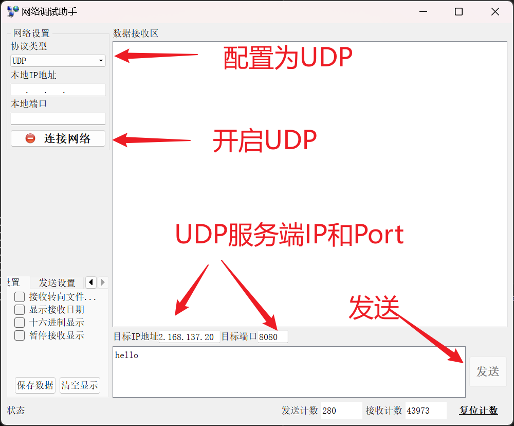</p><p data-lake-id="ue46e7536" id="ue46e7536"><span data-lake-id="ub4659b5a" id="ub4659b5a">服务器IP的获取方式需要通过路由器获得，我使用的是PC机作为热点，可以通过热点中进行设备ip的查询：</span></p><p data-lake-id="u9ab9ab72" id="u9ab9ab72"></p><p data-lake-id="ua7d2c6d1" id="ua7d2c6d1"><span data-lake-id="ud10f2a66" id="ud10f2a66">点击连接网络，查看串口打印：</span></p><p data-lake-id="ua204eeec" id="ua204eeec">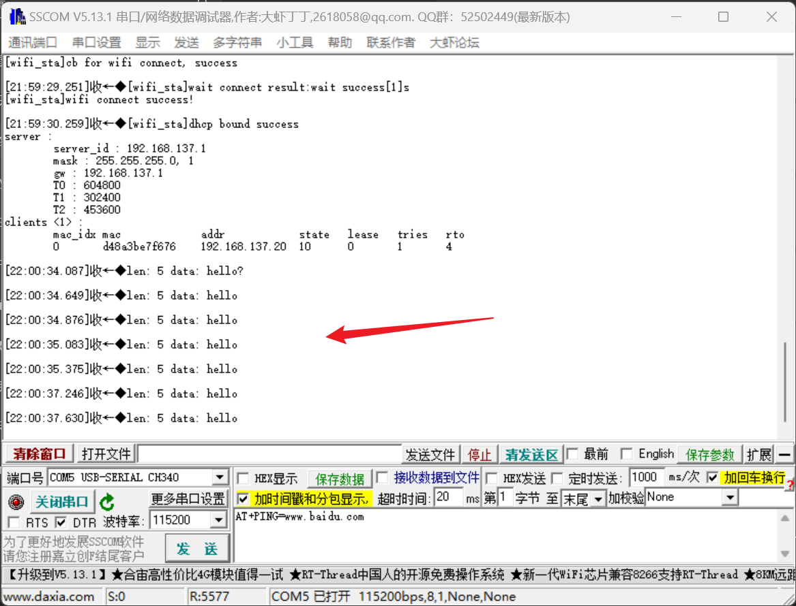</p><h4 data-lake-id="x7N0x" id="x7N0x"><span data-lake-id="u672ee7f7" id="u672ee7f7">广播开发</span></h4><h5 data-lake-id="vGvJF" id="vGvJF"><span data-lake-id="u12679970" id="u12679970">需求说明</span></h5><ol list="ud0364ecb"><li data-lake-id="ue8c3e1bf" fid="ud4861165" id="ue8c3e1bf"><span data-lake-id="ue02a3f03" id="ue02a3f03">确保设备能够连接网络</span></li><li data-lake-id="uf6e1b9db" fid="ud4861165" id="uf6e1b9db"><span data-lake-id="u0eb414d5" id="u0eb414d5">当前开发的是广播端，需要多个接收端配合，实现一对多通讯</span></li><li data-lake-id="u38c3dd3f" fid="ud4861165" id="u38c3dd3f"><span data-lake-id="u9df686c4" id="u9df686c4">确保服务端和客户端在同一个网络环境中（在同一个局域网）</span></li><li data-lake-id="u6a119019" fid="ud4861165" id="u6a119019"><span data-lake-id="u535e3ccf" id="u535e3ccf">广播端循环给接收端发送消息</span></li></ol><h5 data-lake-id="xpmg2" id="xpmg2"><span data-lake-id="u775239a6" id="u775239a6">开发流程</span></h5><p data-lake-id="u40137180" id="u40137180"><span data-lake-id="u63116a46" id="u63116a46">来到应用开发的</span><strong><span data-lake-id="ua2c731c4" id="ua2c731c4">根目录。</span></strong></p><p data-lake-id="uaae0d302" id="uaae0d302"><span data-lake-id="u7ba8bd14" id="u7ba8bd14">我们编写代码的</span><strong><span data-lake-id="uabc70f03" id="uabc70f03">根目录</span></strong><span data-lake-id="u57fdcae2" id="u57fdcae2">为</span><code data-lake-id="ud11215ef" id="ud11215ef"><span data-lake-id="u5045e3f9" id="u5045e3f9">device/board/itcast/genkipi/app</span></code><span data-lake-id="u46f2ce7b" id="u46f2ce7b">。</span></p><ol list="uff12f4b3"><li data-lake-id="udcc051f6" fid="u3177aa8f" id="udcc051f6"><strong><span data-lake-id="ufab31d84" id="ufab31d84">根目录</span></strong><span data-lake-id="u5d5f55ce" id="u5d5f55ce">下新建</span><code data-lake-id="u0c8b5faa" id="u0c8b5faa"><span data-lake-id="u7e52bf66" id="u7e52bf66" style="color: rgb(54, 70, 78); background-color: rgb(245, 245, 245)">udp_broadcast</span></code><span data-lake-id="u491afef2" id="u491afef2" style="color: rgb(54, 70, 78); background-color: rgb(245, 245, 245)">文件夹，此为</span><strong><span data-lake-id="uf1ce6add" id="uf1ce6add" style="color: rgb(54, 70, 78); background-color: rgb(245, 245, 245)">项目目录</span></strong><span data-lake-id="u391ed8a5" id="u391ed8a5" style="color: rgb(54, 70, 78); background-color: rgb(245, 245, 245)">。</span></li><li data-lake-id="u89452e03" fid="u3177aa8f" id="u89452e03"><span data-lake-id="u2daf87d2" id="u2daf87d2" style="color: rgb(54, 70, 78); background-color: rgb(245, 245, 245)">此</span><strong><span data-lake-id="u7bb7ad99" id="u7bb7ad99" style="color: rgb(54, 70, 78); background-color: rgb(245, 245, 245)">项目目录</span></strong><span data-lake-id="uef4843d0" id="uef4843d0" style="color: rgb(54, 70, 78); background-color: rgb(245, 245, 245)">下新建</span><code data-lake-id="u7bbd742d" id="u7bbd742d"><span data-lake-id="ueffaa2ee" id="ueffaa2ee" style="color: rgb(54, 70, 78); background-color: rgb(245, 245, 245)">main.c</span></code><span data-lake-id="ubcafec90" id="ubcafec90" style="color: rgb(54, 70, 78); background-color: rgb(245, 245, 245)">文件</span></li><li data-lake-id="u68ce9270" fid="u3177aa8f" id="u68ce9270"><span data-lake-id="ud776e432" id="ud776e432" style="color: rgb(54, 70, 78); background-color: rgb(245, 245, 245)">此</span><strong><span data-lake-id="ue6becb94" id="ue6becb94" style="color: rgb(54, 70, 78); background-color: rgb(245, 245, 245)">项目目录</span></strong><span data-lake-id="uea445fff" id="uea445fff" style="color: rgb(54, 70, 78); background-color: rgb(245, 245, 245)">下新建</span><code data-lake-id="uf3bdc0e8" id="uf3bdc0e8"><span data-lake-id="u22300bf1" id="u22300bf1" style="color: rgb(54, 70, 78); background-color: rgb(245, 245, 245)">BUILD.gn</span></code><span data-lake-id="u48367225" id="u48367225" style="color: rgb(54, 70, 78); background-color: rgb(245, 245, 245)">文件</span></li><li data-lake-id="uc66b9dff" fid="u3177aa8f" id="uc66b9dff"><span data-lake-id="u6ff8f146" id="u6ff8f146" style="color: rgba(0, 0, 0, 0.87)">修改</span><strong><span data-lake-id="u74c19022" id="u74c19022" style="color: rgba(0, 0, 0, 0.87)">根目录</span></strong><span data-lake-id="u00f501cd" id="u00f501cd" style="color: rgba(0, 0, 0, 0.87)">下的</span><code data-lake-id="ub069b40d" id="ub069b40d"><span data-lake-id="u4de2d002" id="u4de2d002" style="color: rgba(0, 0, 0, 0.87)">BUILD.gn</span></code><span data-lake-id="uebe4b2d9" id="uebe4b2d9" style="color: rgba(0, 0, 0, 0.87)">文件</span></li></ol><h5 data-lake-id="XbLDR" id="XbLDR"><span data-lake-id="uf9a67d17" id="uf9a67d17">代码部分</span></h5><span class="yuque-card-unsupported">[codeblock]</span><span class="yuque-card-unsupported">[codeblock]</span><span class="yuque-card-unsupported">[codeblock]</span><h5 data-lake-id="wQKYO" id="wQKYO"><span data-lake-id="u3f91f535" id="u3f91f535">校验方式</span></h5><p data-lake-id="u3f70f0c3" id="u3f70f0c3"><span data-lake-id="u8df7ac0e" id="u8df7ac0e">打开网络调试助手，当前编写的代码为UDP广播端，那么我们需要将调试助手配置为UDP接收端，而且不止一个UDP接收端，这个时候我们需要多台电脑，每台电脑都打开网络调试助手。网络调试助手配置如图:</span></p><p data-lake-id="u59fa8218" id="u59fa8218">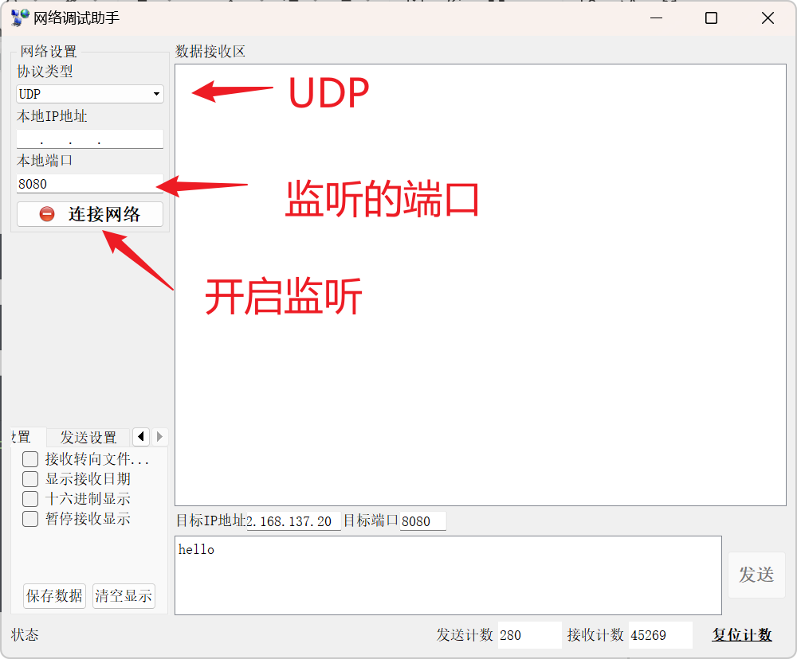</p><p data-lake-id="u44976486" id="u44976486"><span data-lake-id="ufcaec551" id="ufcaec551">点击连接网络，观察打印输出结果。</span></p><p data-lake-id="u9199cc1d" id="u9199cc1d">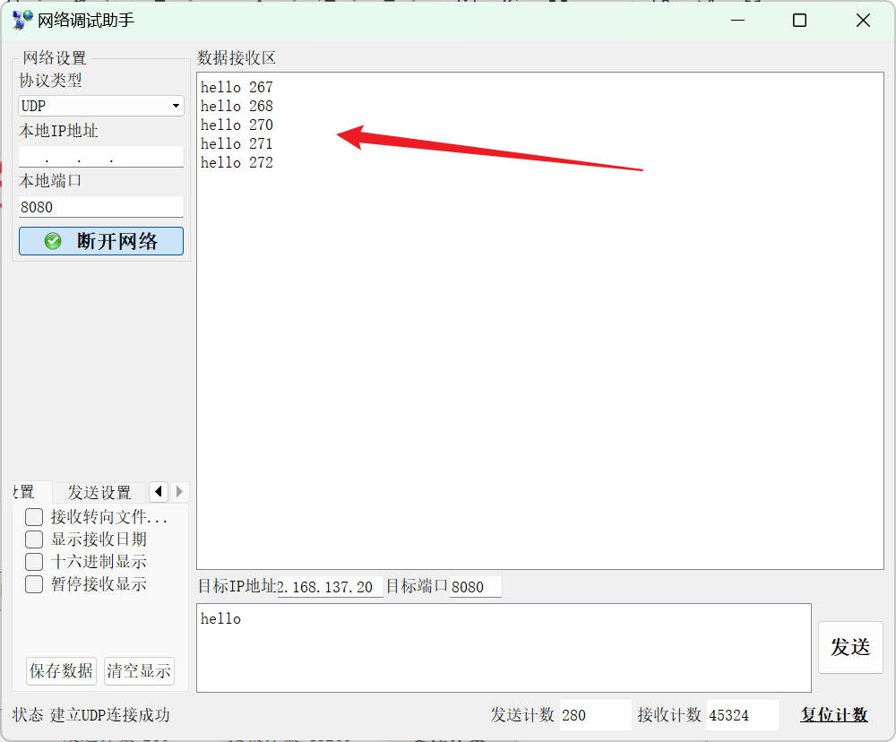</p><p data-lake-id="uaaf9e09a" id="uaaf9e09a"><span data-lake-id="u681e09af" id="u681e09af">在这里需要特别强调的是，多台接收电脑和广播端必须在同一个局域网内。</span></p><p data-lake-id="u05fb3a93" id="u05fb3a93"><span data-lake-id="udf6af100" id="udf6af100">​</span><br/></p><h2 data-lake-id="uSV6I" id="uSV6I"><span data-lake-id="ua20ca568" id="ua20ca568">练习题</span></h2><ol list="u8d52e0ad"><li data-lake-id="u014b0b8e" fid="u094bc59b" id="u014b0b8e"><span data-lake-id="uef4db3ac" id="uef4db3ac">实现TCP 客户端的编写，进行调试。</span></li><li data-lake-id="u1bf7fd70" fid="u094bc59b" id="u1bf7fd70"><span data-lake-id="u6df7d9ae" id="u6df7d9ae">实现TCP 服务端的编写，进行调试。</span></li><li data-lake-id="u322b75bd" fid="u094bc59b" id="u322b75bd"><span data-lake-id="u946d6255" id="u946d6255">实现UDP 客户端的编写，进行调试。</span></li><li data-lake-id="u6aa6d6ce" fid="u094bc59b" id="u6aa6d6ce"><span data-lake-id="ue26b650c" id="ue26b650c">实现UDP 服务端的编写，进行调试。</span></li><li data-lake-id="u27b81074" fid="u094bc59b" id="u27b81074"><span data-lake-id="uee6b7692" id="uee6b7692">实现UDP 广播端的编写，进行调试。</span></li></ol>